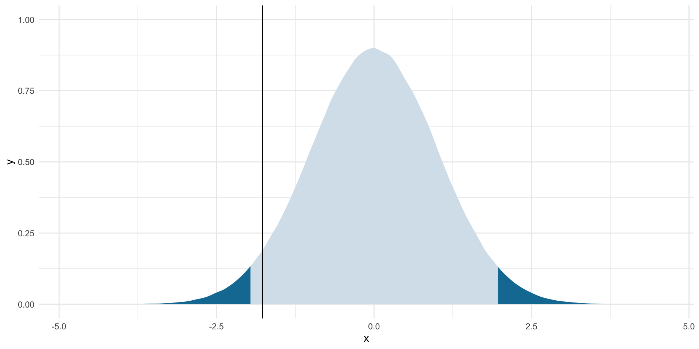
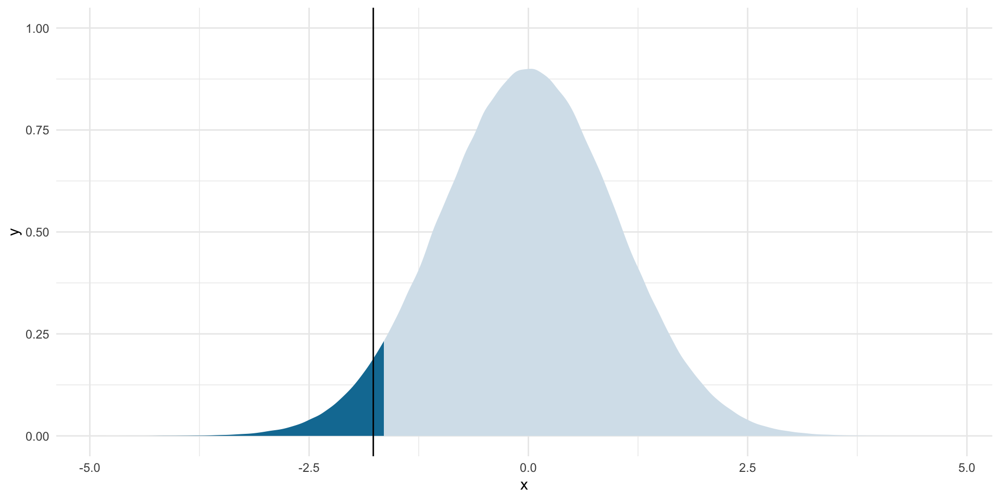
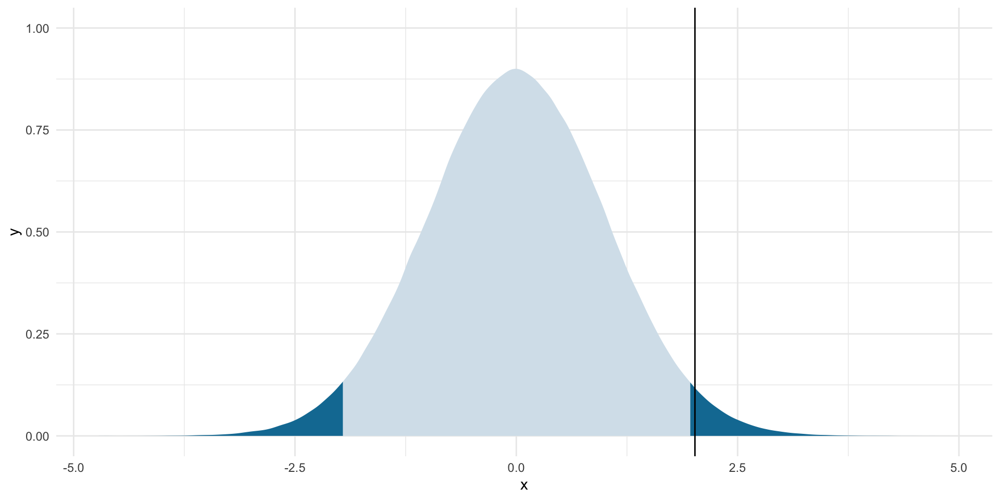
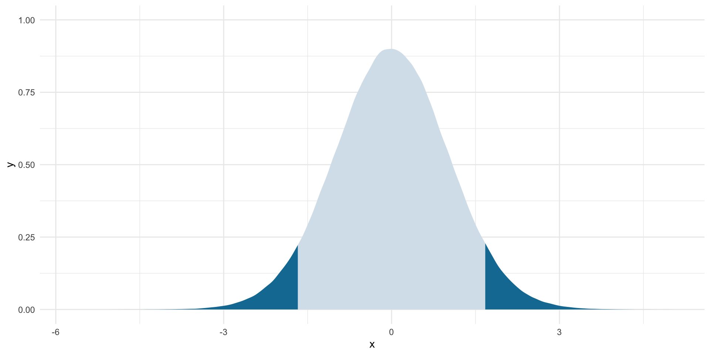
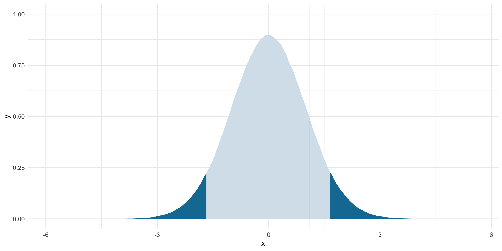
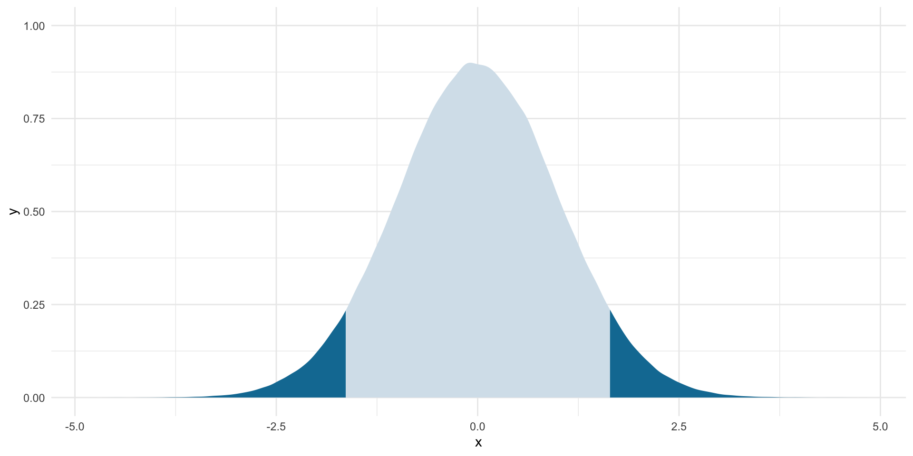

install.packages("peacesciencer")Applications & Midterm Exam Review II
Section
library(tidyverse)
library(peacesciencer)
library(ggdist)
library(MetBrewer)
library(scales)
library(janitor)
library(wbstats)
library(countrycode)
library(modelsummary)Today, we are going to revise what we have learnt about hypothesis testing by working through some relevant examples.
A single mean
We know that militarized conflict between states is a very rare event: most country pairings are at peace most of the time. Was the average number of militarized interstate disputes (MIDs) fought between states in 2014 different from 0.0036?
mid_df <- create_dyadyears(directed = F, subset_years = 2014) |>
add_cow_mids() |>
select(year, ccode1, ccode2, cowmidongoing)
mid_df |>
filter(cowmidongoing == 1)# A tibble: 55 × 4
year ccode1 ccode2 cowmidongoing
<dbl> <dbl> <dbl> <dbl>
1 2014 2 365 1
2 2014 2 652 1
3 2014 2 700 1
4 2014 2 710 1
5 2014 2 731 1
6 2014 2 770 1
7 2014 20 365 1
8 2014 200 230 1
9 2014 200 365 1
10 2014 210 365 1
# ℹ 45 more rowsWhat was the observed average number of MIDs fought between states in 2014?
avg_mid <- mean(mid_df$cowmidongoing)
avg_mid[1] 0.002907745Is this difference significant, or simply the product of random noise? What would a world in which the average number of MIDs between states in 2014 was 0.0036 look like?
Note
Remember, our null world is represented by the t-distribution. We center our null world at 0, allowing this to represent our null hypothesis. We work out how certain we are of our statistic using the amount of information we have (represented by the degrees of freedom). Next, we will work out how far away from this centerpoint our observed statistic sits.
What are our degrees of freedom?
df <- nrow(mid_df) - 1
df[1] 18914We can use these degrees of freedom to build our null world:
ggplot(tibble(x = rt(1e6, df)), aes(x = x)) +
stat_slab() +
theme_minimal() +
theme(legend.position = "none")This is what the standardized average number of MIDs pulled from one million samples drawn from our hypothetical null world would look like. The only reason they are not all equal to 0 is random chance.
We observed an average number of MIDs of 0.003 in 2014. If the null hypothesis were true, how likely would we be to see this average number of MIDs if we pulled a random sample from that null world?
First, we need to set a threshold at which we are happy to accept the risk that we reject a true null hypothesis. Let’s use the standard 5%.
Next, we need to work out where the remaining 95% of these null world means fall. I am going to focus on where 95% of these means fall around the null statistic (of 0). Because we are working with the standardized t-distribution, we can use what we know about that distribution to answer this question.
Tip
The base function qt() gives us the t-statistic that sits at a given probability.
This is simply the area under the t-distribution curve, which represents the proportion of hypothetical t-statistics that are equal to or more extreme than our given point. For example, we want to find the t-statistic corresponding to the point beyond which 97.5% of all possible t-statistics fall. See lower_boundary and the graph below.
lower_boundary <- qt(0.025, df = df, lower.tail = T)
lower_boundary[1] -1.960089upper_boundary <- qt(0.025, df = df, lower.tail = F)
upper_boundary[1] 1.960089ggplot(tibble(x = rt(1e6, df)), aes(x = x)) +
stat_slab(aes(fill_ramp = after_stat(x < lower_boundary | x > upper_boundary)),
fill = met.brewer("Egypt")[2]) +
theme_minimal() +
theme(legend.position = "none")Where does our observed mean fall in relation to this null world? First, we need to translate our observed mean into its corresponding t-statistic:
\[ t = \frac{\bar{x} - \mu_0}{\frac{s}{\sqrt{n}}} \]
Note
Above, we centered our null world at 0. So, we need to translate our observed mean into its distance from the null hypothesis mean (represented by 0).
We know our observed mean, \(\bar{x}\):
avg_mid[1] 0.002907745And our null mean, \(\mu_0\):
null_mean <- 0.0036
null_mean[1] 0.0036And our sample size, \(n\):
sample_size <- nrow(mid_df)
sample_size[1] 18915And our sample standard deviation, \(s\):
sample_sd <- sd(mid_df$cowmidongoing)
sample_sd[1] 0.05384648Therefore, our translated t-statistic is:
t_stat <- (avg_mid - null_mean) / (sample_sd / sqrt(sample_size))
t_stat[1] -1.76812Where does this sit within our null world?
ggplot(tibble(x = rt(1e6, df)), aes(x = x)) +
stat_slab(aes(fill_ramp = after_stat(x < lower_boundary | x > upper_boundary)),
fill = met.brewer("Egypt")[2]) +
geom_vline(xintercept = t_stat) +
theme_minimal() +
theme(legend.position = "none")
In other worlds, if the null hypothesis were true, how likely would we be to draw a SRS that was as extreme or more extreme than the one we observed?
2*pt(t_stat, df = df)[1] 0.07705689
Tip
The base function pt() gives is the probability of observing a value equal to or as extreme as the t-statistic we provided. It does the opposite of qt().
Note
We need to double this probability because it is only providing us the p-value that corresponds with the first t-statistic (the dark blue area shaded to the left of the graph above).
If the null hypothesis were true, we would observe an average number of MIDs between states of 0.003 in 7.71% of an infinite number of samples from that null world. Therefore, we cannot reject the null hypothesis that the average number of MIDs between states in 2014 was 0.0036 with a two-tailed test at the 5% threshold.
One-tailed test
What if our hypothesis was directional? What if I believe that the average number of MIDs between states is less than 0.0036?
When we talk about the direction of our significance test, we are talking about those boundaries around the null hypothesis. I am still only willing to accept a 5% chance that I reject the null hypothesis when it is in fact true. However, I no longer need to split that 5% chance evenly above and below the null hypothesis. Instead, I can place that whole 5% either above or below my null hypothesis (depending on the direction of my hypothesis).
In this example, I think that the average number of MIDs between states is less than 0.0036. If my sample has an average number of MIDs greater than 0.0036, I should more readily reject my alternative hypothesis that the average number of MIDs is smaller than 0.0036. Therefore, I can concentrate my 5% threshold below the null hypothesis:
lower_boundary <- qt(0.05, df = df, lower.tail = T)
lower_boundary[1] -1.644934Visually:
ggplot(tibble(x = rt(1e6, df)), aes(x = x)) +
stat_slab(aes(fill_ramp = after_stat(x < lower_boundary)),
fill = met.brewer("Egypt")[2]) +
theme_minimal() +
theme(legend.position = "none")Remember, I cannot reject the null hypothesis if it is plausible (there is a 95% chance) that I would observe the mean that I did even if the null hypothesis were true. That 95% is represented by the light blue area on the graph above. The dark blue shaded area is still highlighting where the average count of MIDs drawn from 5% of all possible samples pulled from the null world would fall.
Our observed average has not changed. Let’s put it in this new context:
ggplot(tibble(x = rt(1e6, df)), aes(x = x)) +
stat_slab(aes(fill_ramp = after_stat(x < lower_boundary)),
fill = met.brewer("Egypt")[2]) +
geom_vline(xintercept = t_stat) +
theme_minimal() +
theme(legend.position = "none")
It is unlikely that we would observe this average number of MIDs if, in fact, the null hypothesis were true. How unlikely?
pt(t_stat, df = df)[1] 0.03852845If the null hypothesis were true, we would observe an average number of MIDs of 0.003 in 3.85% of an infinite number of samples from that null world. Therefore, we can reject the null hypothesis that the average number of MIDs between states in 2014 was 0.0036 with a one-tailed test at the 5% threshold.
A single proportion
Are the majority of states in the world democracies?
dem_df <- ccode_democracy |>
drop_na(polity2) |>
slice_max(year) |>
transmute(ccode, democracy = if_else(polity2 > 5, 1, 0))
dem_df# A tibble: 166 × 2
ccode democracy
<dbl> <dbl>
1 2 1
2 20 1
3 40 0
4 41 0
5 42 1
6 51 1
7 52 1
8 70 1
9 90 1
10 91 0
# ℹ 156 more rowsWhat proportion of states were democracies in 2017?
tabyl(dem_df, democracy) democracy n percent
0 70 0.4216867
1 96 0.5783133Is this proportion significantly different from 0.5, or is it simply the product of random noise?
To answer this question, we will set up our null world:
ggplot(tibble(x = rnorm(1e6)), aes(x = x)) +
stat_slab() +
theme_minimal() +
theme(legend.position = "none")
Note
Remember, we use the normal distribution when examining the difference of proportions.
Tip
The base function rnorm() gives us random values drawn from a normal distribution. By default, rnorm() draws from a normal distribution centered at 0 and with a standard deviation of 1. This is perfect for working with z-scores.
This is what the standardized proportion of democracies are for 1 million samples drawn from our null world.
Let’s see whether we can reject the null hypothesis that the proportion of democracies globally is 0.5 or 50%. I am willing to accept a 5% risk that I reject this null hypothesis when it is, in fact, true. So I now need to work out where 95% of plausible proportions fall in samples drawn from a world in which the proportion of democracies is 0.5.
lower_boundary <- qnorm(0.025)
lower_boundary[1] -1.959964upper_boundary <- qnorm(0.025, lower.tail = F)
upper_boundary[1] 1.959964Let’s see this:
ggplot(tibble(x = rnorm(1e6)), aes(x = x)) +
stat_slab(aes(fill_ramp = after_stat(x < lower_boundary | x > upper_boundary)),
fill = met.brewer("Egypt")[2]) +
theme_minimal() +
theme(legend.position = "none")So, if our observed statistic sits so far from the null hypothesis that there is less than a 5% chance that I could draw a sample with its proportion of democracies, then we have sufficient evidence to reject the null hypothesis at this threshold. We just need to work out where our observed statistic sits on this standardized distribution.
To do this, we need to translate our observed statistic into its z-score:
\[ z = \frac{\hat{p} - p_0}{\sqrt{\frac{p_0(1-p_0)}{n}}} \]
We know our observed proportion, \(\hat{p}\):
sample_proportion <- dem_df |>
tabyl(democracy) |>
filter(democracy == 1) |>
pull(percent)
sample_proportion[1] 0.5783133And our null proportion, \(p_0\):
null_proportion <- 0.5
null_proportion[1] 0.5And our sample size, \(n\):
sample_size <- nrow(dem_df)
sample_size[1] 166Now we can translate our observed proportion into its distance from the null proportion:
z_score <- (sample_proportion - null_proportion) / sqrt((null_proportion * (1 - null_proportion)) / sample_size)
z_score[1] 2.017991This z-score represents how far from the null proportion our observed proportion sits. Let’s take a look:
ggplot(tibble(x = rnorm(1e6)), aes(x = x)) +
stat_slab(aes(fill_ramp = after_stat(x < lower_boundary | x > upper_boundary)),
fill = met.brewer("Egypt")[2]) +
geom_vline(xintercept = z_score) +
theme_minimal() +
theme(legend.position = "none")
In fact, our observed statistic is sufficiently far from the null hypothesis. We can reject that null hypothesis with 95% confidence.
2*pnorm(z_score, lower.tail = F)[1] 0.04359216There is a 4% chance that we would observe a proportion of democracies that was either this far above or below a proportion of 0.5 if the true proportion of democracies was 0.5. This is less than the threshold by which I am willing to reject a true null hypothesis. Therefore, I have sufficient evidence to reject the null hypothesis.
Difference of means
Are democracies richer, on average, than non-democracies?
gdp_df <- wb_data("NY.GDP.MKTP.CD",
start_date = 2017,
end_date = 2017,
return_wide = F) |>
transmute(ccode = countrycode(country, "country.name", "cown"),
gdp = value)
dem_gdp_df <- dem_df |>
left_join(gdp_df) |>
drop_na(gdp)What is the average GDP of democracies and non-democracies?
dem_gdp_summary <- dem_gdp_df |>
group_by(democracy) |>
summarise(n = n(),
avg_gdp = mean(gdp)) |>
mutate(diff_avg_gdp = avg_gdp - lag(avg_gdp))
dem_gdp_summary# A tibble: 2 × 4
democracy n avg_gdp diff_avg_gdp
<dbl> <int> <dbl> <dbl>
1 0 66 311030589116. NA
2 1 94 631669975302. 320639386186.It appears that we have support for our hypothesis that democracies are richer than non-democracies on average. How much richer?
diff_avg <- dem_gdp_summary |>
filter(democracy == 1) |>
pull(diff_avg_gdp)
dollar(diff_avg)[1] "$320,639,386,186"However, we need to confirm that this difference is not the product of random chance.
First, we need to build our null world. In this world, there is no difference in the average wealth of democracies and non-democracies. We will center our null world at 0. We can use our degrees of freedom to build in uncertainty around that central point.
Note
The degrees of freedom for the difference of means is equal to the smaller of the number of observations within each group minus one.
n_democracies <- dem_gdp_summary |>
filter(democracy == 1) |>
pull(n)
n_democracies[1] 94n_non_democracies <- dem_gdp_summary |>
filter(democracy == 0) |>
pull(n)
n_non_democracies[1] 66Our degrees of freedom are equal to the smaller of these two, minus one:
df <- min(n_democracies, n_non_democracies) - 1
df[1] 65Now we have all the information that we need to build our null world:
ggplot(tibble(x = rt(1e6, df)), aes(x = x)) +
stat_slab() +
theme_minimal() +
theme(legend.position = "none")I am now happy to accept a 10% risk that I will reject a true null hypothesis. However, I will continue to work with two-tailed tests. Let’s work out where 90% of our hypothetical differences of means sit around our null mean of 0.
lower_boundary <- qt(0.05, df = df)
lower_boundary[1] -1.668636upper_boundary <- qt(0.05, df = df, lower.tail = F)
upper_boundary[1] 1.668636Let’s visualize those boundaries:
ggplot(tibble(x = rt(1e6, df)), aes(x = x)) +
stat_slab(aes(fill_ramp = after_stat(x < lower_boundary | x > upper_boundary)),
fill = met.brewer("Egypt")[2]) +
theme_minimal() +
theme(legend.position = "none")
Where does our observed difference of means sit along this standardized distribution? To answer this question, we need to translate our observed difference of $320,639,386,186 into its t-statistic:
\[ t = \frac{\bar{x_1} - \bar{x_2}}{\sqrt{\frac{s^2_1}{n_1} + \frac{s^2_2}{n_2}}} \] We know our difference of means, \(\bar{x_1} - \bar{x_2}\):
dollar(diff_avg)[1] "$320,639,386,186"And our sample sizes, \(n_1\) and \(n_2\):
n_democracies[1] 94n_non_democracies[1] 66And our standard deviations, \(s_1\) and \(s_2\):
s_1 <- dem_gdp_df |>
filter(democracy == 1) |>
pull(gdp) |>
sd()
dollar(s_1)[1] "$2,149,439,341,731"s_2 <- dem_gdp_df |>
filter(democracy == 0) |>
pull(gdp) |>
sd()
dollar(s_2)[1] "$1,519,811,642,705"Therefore, the t-statistic for our observed difference of means is:
t_stat <- diff_avg / sqrt((s_1^2 / n_democracies) + (s_2^2 / n_non_democracies))
t_stat[1] 1.105342Let’s place this observed statistic in the context of the null world:
ggplot(tibble(x = rt(1e6, df)), aes(x = x)) +
stat_slab(aes(fill_ramp = after_stat(x < lower_boundary | x > upper_boundary)),
fill = met.brewer("Egypt")[2]) +
geom_vline(xintercept = t_stat) +
theme_minimal() +
theme(legend.position = "none")
It is plausible that we could observe a difference of means equal to $320,639,386,186 even if there is no significant difference of means between the wealth of democracies and non-democracies. In fact, there is the following chance that we would observe this difference:
percent(2 * pt(t_stat, df = df, lower.tail = F))[1] "27%"This sits well above our threshold of a 10% risk that we would reject a true null hypothesis.
T-test shortcut
We get the same result using the base function t.test():
t.test(gdp ~ democracy, data = dem_gdp_df)
Welch Two Sample t-test
data: gdp by democracy
t = -1.1053, df = 157.99, p-value = 0.2707
alternative hypothesis: true difference in means between group 0 and group 1 is not equal to 0
95 percent confidence interval:
-893577418352 252298645981
sample estimates:
mean in group 0 mean in group 1
311030589116 631669975302
Note
t.test() finds the difference of means by subtracting the average GDP of democracies from that of non-democracies. That is why the t-statistic is negative.
Difference of proportions
Is the proportion of democratic dyads with defense alliances greater than that of non-democratic dyads?
alliance_df <- create_dyadyears(directed = F, subset_years = 2010) |>
add_cow_alliance() |>
add_democracy() |>
transmute(ccode1,
ccode2,
cow_defense,
dem_dyad = if_else(polity21 > 5 & polity22 > 5, 1, 0)) |>
drop_na(cow_defense, dem_dyad)
alliance_df# A tibble: 15,496 × 4
ccode1 ccode2 cow_defense dem_dyad
<dbl> <dbl> <dbl> <dbl>
1 2 20 1 1
2 2 40 0 0
3 2 41 1 0
4 2 42 1 1
5 2 51 1 1
6 2 52 1 1
7 2 70 1 1
8 2 90 1 1
9 2 91 1 1
10 2 92 1 1
# ℹ 15,486 more rowsWhat proportion of democratic and non-democratic dyads have defense alliances?
alliance_summary <- alliance_df |>
group_by(dem_dyad) |>
summarise(n = n(),
n_defense = sum(cow_defense)) |>
mutate(prop = n_defense / n,
diff_prop = prop - lag(prop))
alliance_summary# A tibble: 2 × 5
dem_dyad n n_defense prop diff_prop
<dbl> <int> <dbl> <dbl> <dbl>
1 0 11218 491 0.0438 NA
2 1 4278 402 0.0940 0.0502The proportion of democratic dyads with defense alliances is greater than that of non-democratic dyads. Is this difference statistically significant?
Let’s set up our null world:
ggplot(tibble(x = rnorm(1e6)), aes(x = x)) +
stat_slab() +
theme_minimal() +
theme(legend.position = "none")We will stick with our two-tailed test at the 0.1 threshold. Let’s find where the other 90% of difference of proportions fall in our null world:
lower_boundary <- qnorm(0.05)
lower_boundary[1] -1.644854upper_boundary <- qnorm(0.05, lower.tail = F)
upper_boundary[1] 1.644854ggplot(tibble(x = rnorm(1e6)), aes(x = x)) +
stat_slab(aes(fill_ramp = after_stat(x < lower_boundary | x > upper_boundary)),
fill = met.brewer("Egypt")[2]) +
theme_minimal() +
theme(legend.position = "none")
Where does our observed difference of 5% fall?
We need to convert this observed difference into its z-score:
\[ z = \frac{\hat{p}_1 - \hat{p}_2}{SE_{D_p}} \]
Where:
\[ SE_{D_p} = \sqrt{\hat{p}(1-\hat{p})(\frac{1}{n_1} + \frac{1}{n_2})} \]
And:
\[ \hat{p} = \frac{x_1 + x_2}{n_1 + n_2} \]
We will take this step-by-step:
We know the proportion of democratic and non-democratic dyads that have defense alliances:
alliance_summary# A tibble: 2 × 5
dem_dyad n n_defense prop diff_prop
<dbl> <int> <dbl> <dbl> <dbl>
1 0 11218 491 0.0438 NA
2 1 4278 402 0.0940 0.0502Therefore, we can calculate our pooled estimate: \(\hat{p}\):
pooled_p <- sum(alliance_summary$prop)
pooled_p[1] 0.1377381And our sample sizes:
n_dem_dyad <- alliance_summary |>
filter(dem_dyad == 1) |>
pull(n)
n_dem_dyad[1] 4278n_non_dem_dyad <- alliance_summary |>
filter(dem_dyad == 0) |>
pull(n)
n_non_dem_dyad[1] 11218Which allows us to calculate our standard error:
se <- sqrt(pooled_p * (1 - pooled_p) * ((1 / n_dem_dyad) + (1 / n_non_dem_dyad)))
se[1] 0.006192675Which allows us to translate our observed difference into its z-score:
diff_prop <- alliance_summary |>
filter(dem_dyad == 1) |>
pull(diff_prop)
z_score <- diff_prop / se
z_score[1] 8.106383Which we can then put into the context of the null world:
ggplot(tibble(x = rnorm(1e6)), aes(x = x)) +
stat_slab(aes(fill_ramp = after_stat(x < lower_boundary | x > upper_boundary)),
fill = met.brewer("Egypt")[2]) +
geom_vline(xintercept = z_score) +
theme_minimal() +
theme(legend.position = "none")We are very unlikely to have seen a difference in the proportion of democracies and non-democracies with defense alliances of 5% if there were, in fact, no difference in these proportions. How unlikely?
2 * pnorm(z_score, lower.tail = F)[1] 5.214871e-16Very unlikely!
Difference of counts
Let’s look at this same question, but ask whether democracy shared between countries in a dyad significantly effects the number of defense alliances held by them.
First, we need to find the observed count of defense alliances split between democratic and non-democratic dyads:
datasummary_crosstab(cow_defense ~ dem_dyad, data = alliance_df)| cow_defense | 0 | 1 | All | |
|---|---|---|---|---|
| 0 | N | 10727 | 3876 | 14603 |
| % row | 73.5 | 26.5 | 100.0 | |
| 1 | N | 491 | 402 | 893 |
| % row | 55.0 | 45.0 | 100.0 | |
| All | N | 11218 | 4278 | 15496 |
| % row | 72.4 | 27.6 | 100.0 |
What would our cross tab look like if democratic dyads had no effect on the number of defense alliances?
# Calculate the observed count for each category
obs_values <- count(alliance_df, cow_defense, dem_dyad, name = "obs_n")
obs_values# A tibble: 4 × 3
cow_defense dem_dyad obs_n
<dbl> <dbl> <int>
1 0 0 10727
2 0 1 3876
3 1 0 491
4 1 1 402# Calculate the total number of dyads that are democratic or non-democratic
dem_dyad_totals <- count(alliance_df, dem_dyad, name = "dem_dyad_total")
dem_dyad_totals# A tibble: 2 × 2
dem_dyad dem_dyad_total
<dbl> <int>
1 0 11218
2 1 4278# Calculate the total number of defense alliances
alliance_totals <- count(alliance_df, cow_defense, name = "defense_total")
alliance_totals# A tibble: 2 × 2
cow_defense defense_total
<dbl> <int>
1 0 14603
2 1 893# Work out your observed counts
obs_exp_counts <- alliance_totals |>
expand_grid(dem_dyad_totals) |>
relocate(dem_dyad) |>
# Calculated the expected values
mutate(exp_n = (defense_total * dem_dyad_total) / nrow(alliance_df)) |>
# Add the observed values for comparison
left_join(obs_values)
obs_exp_counts# A tibble: 4 × 6
dem_dyad cow_defense defense_total dem_dyad_total exp_n obs_n
<dbl> <dbl> <int> <int> <dbl> <int>
1 0 0 14603 11218 10572. 10727
2 1 0 14603 4278 4031. 3876
3 0 1 893 11218 646. 491
4 1 1 893 4278 247. 402How different are our observed counts from our expected counts?
chi_sq <- obs_exp_counts |>
mutate(diff = obs_n - exp_n,
diff_2 = diff^2,
diff_2_standard = diff_2 / exp_n) |>
summarise(chi_sq = sum(diff_2_standard)) |>
pull()
chi_sq[1] 143.7121Very different! But is this difference statistically significant?
pchisq(chi_sq, df = 1, lower.tail = F)[1] 4.1072e-33Yes! We are highly unlikely to see such large differences of counts if being a democratic dyad had no effect on states’ propensity to enter into a defense agreement.
Chi-square test shortcut
chisq.test(alliance_df$cow_defense, alliance_df$dem_dyad)
Pearson's Chi-squared test with Yates' continuity correction
data: alliance_df$cow_defense and alliance_df$dem_dyad
X-squared = 142.79, df = 1, p-value < 2.2e-16